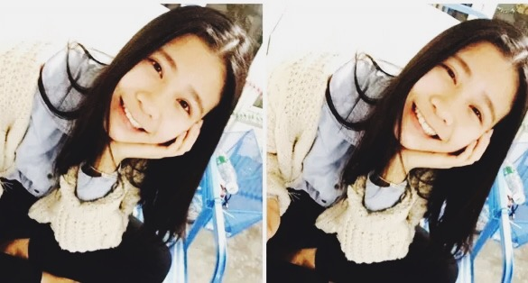
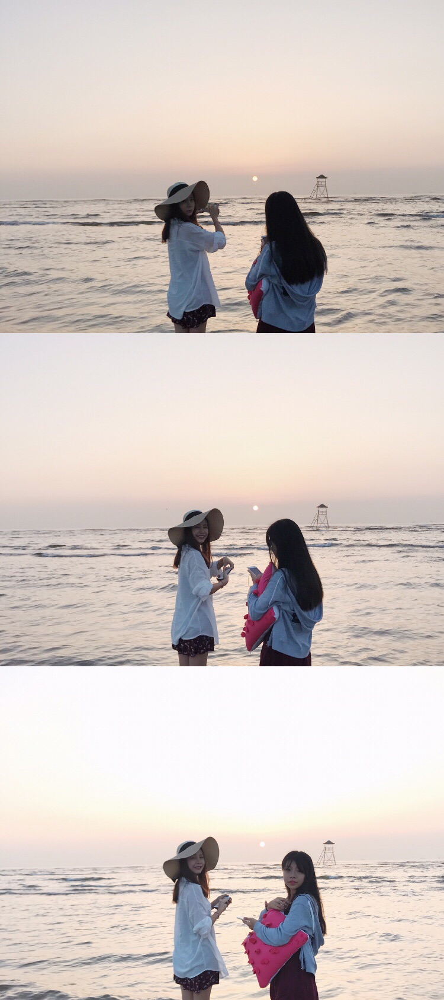
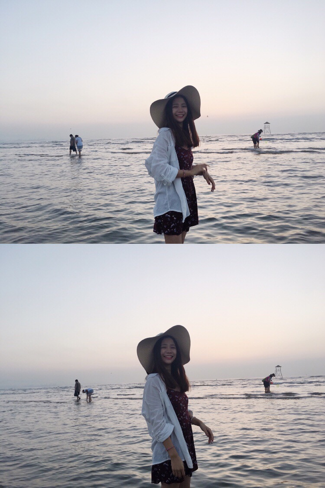
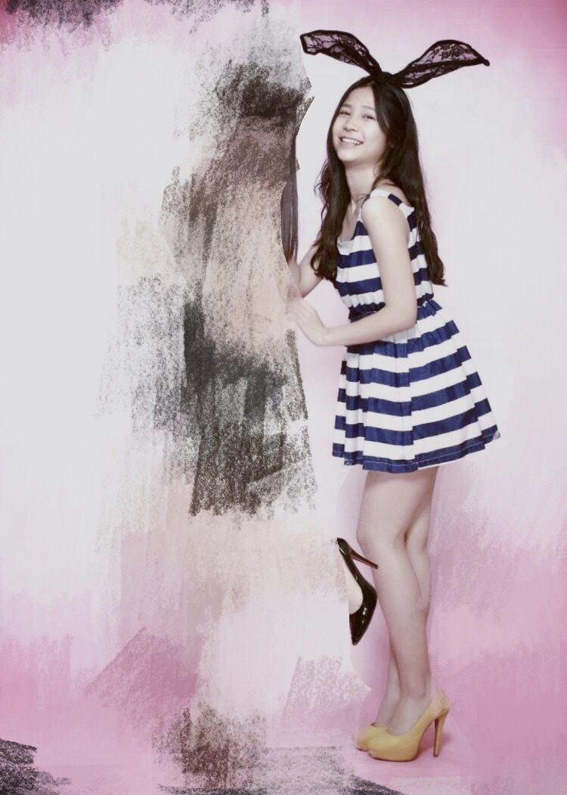
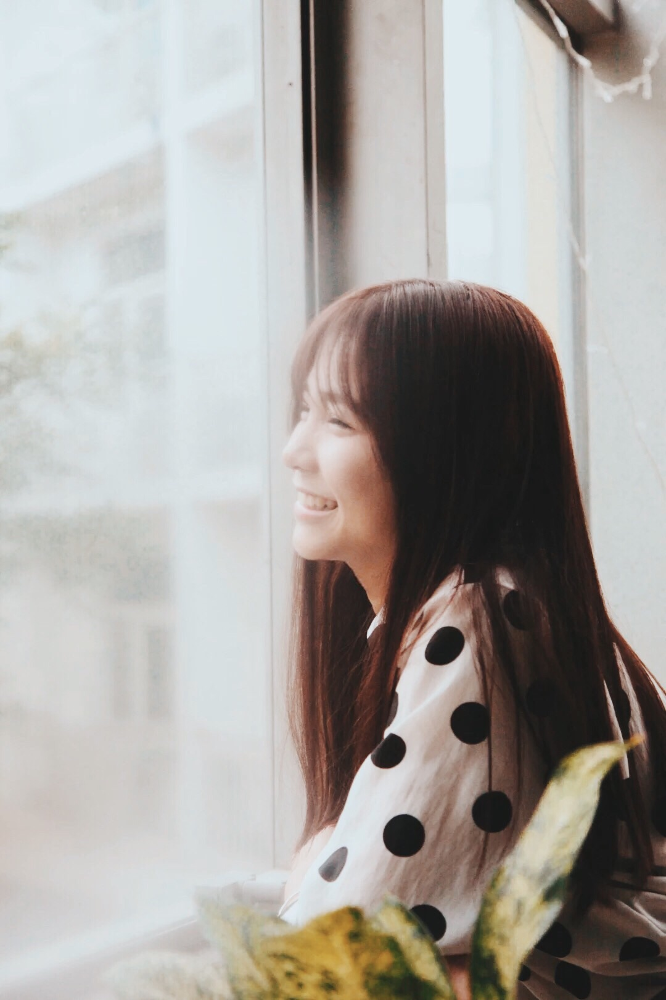
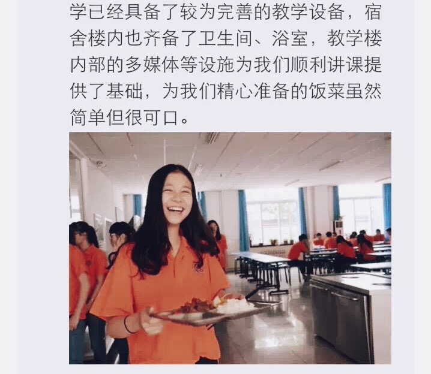

正文: 当然是真笑最自然啊！
给自己讲段子啊！！
我真的是超级爱笑的人啊 虽然一不小心就会笑咧

记得高中校长快过年的时候给我们每个人拍照片
到我的时候
校长说：“笑。”
我笑了
然后校长说:"笑太大了。"
.......
Hhhhh还真是有那么点点的小尴尬啊hhhh
我照片不太多 多数是表情包
我就放两张还算正常的hhh





当然了不该笑的太开心的时候就不要笑了
比如这种组织去支教的时候
..................因为你永远也不会知道你会被放在什么推送里
讲真
我真的不知道我当时想的是什么段子
端着盆饭也能笑得像农民伯伯大丰收一样这么开心
手动再见
______________________________________
感谢各位！
评论就不一一回啦总之谢谢各位 深鞠躬
要表情包的哈哈哈哈哈哈哈我拒绝！！
至于技巧
用舌头顶着上牙确实会比较自然一些
平时对着镜子多看一下笑到什么程度比较好看
很多人可能为了显眼睛大照相笑的时候会刻意睁大眼睛
但是那样真的很不自然啊喂
不过真的笑起来是顾不了这么多了
我觉得无论人物形象怎么样
真实的笑容是最有感染力的
以上